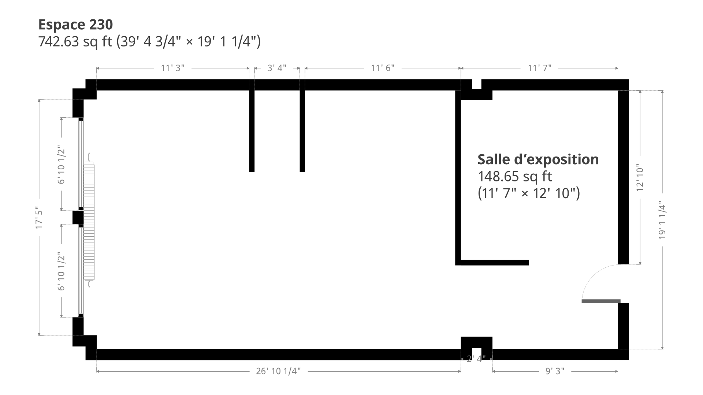
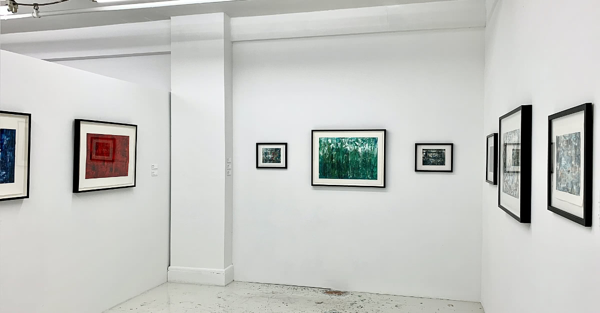
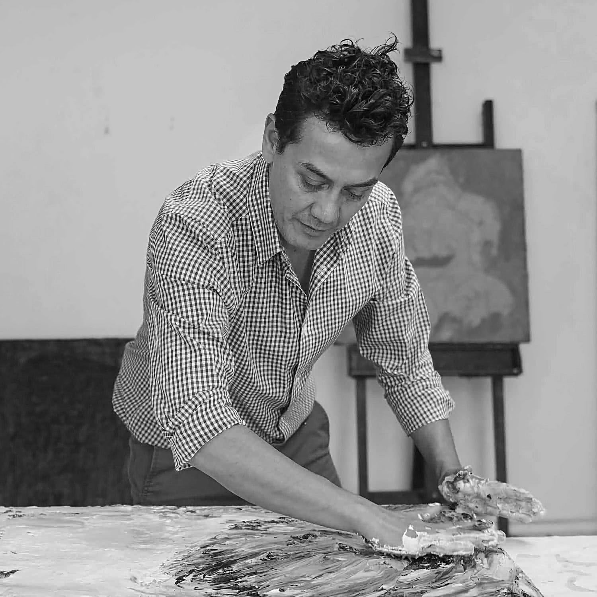
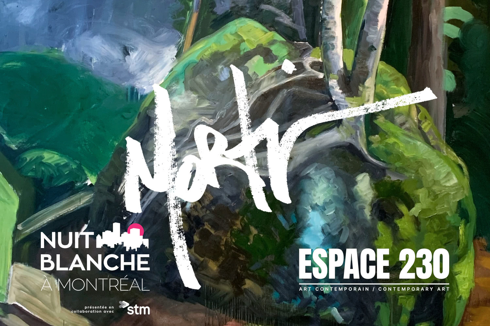
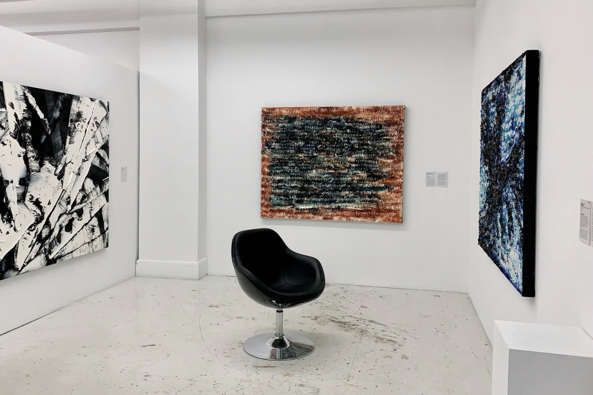
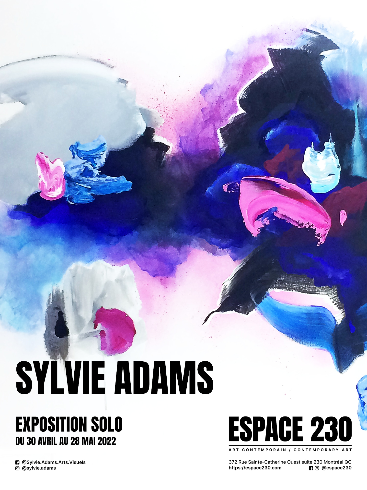
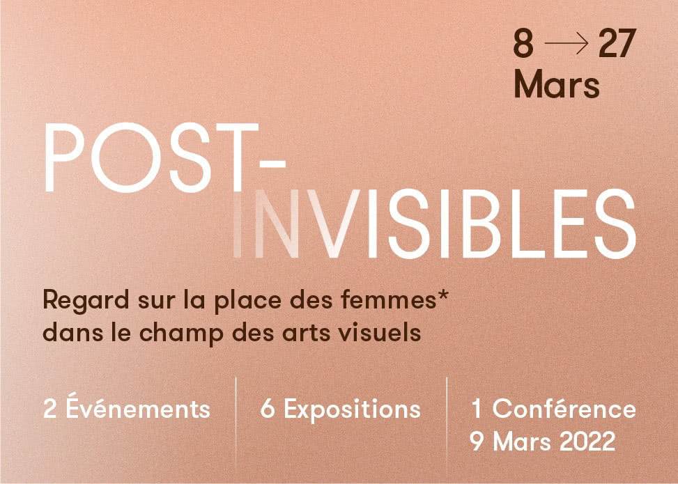
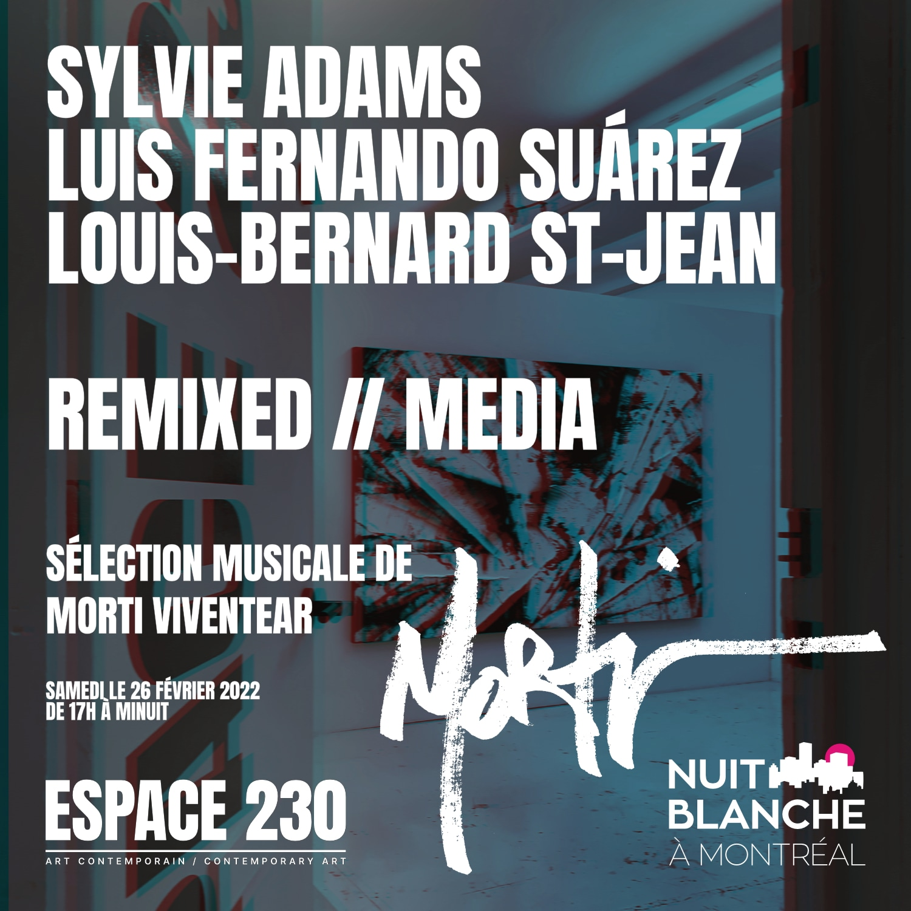

Atelier d’artiste et galerie d’art contemporain située au coeur du Quartier des spectacles à Montréal : l’Espace 230 abrite au 2e étage de l’édifice Belgo l'atelier de l’artiste peintre Louis-Bernard St-Jean.
Les ateliers

Originellement pensé en tant que regroupement de studios d’artistes, l’Espace 230 se voue un caractère double : à la fois un atelier de production d’oeuvres d’art, et aussi un lieu de diffusion d’art contemporain.
Alors que l'atelier est occupé par Louis-Bernard St-Jean, fondateur et propriétaire de l'Espace 230, la première salle, située à l’entrée, fait office de salle d’exposition.
La galerie d'art

Alternant entre expositions collectives, expositions solo et autres évémements artistiques, l'Espace 230 a ainsi été repensé afin de présenter et de promouvoir l'atelier et ses exposants, notamment grâce à son site web dédié, et ses comptes de réseaux sociaux sur Facebook (espace230) et Instagram (@espace230).
De nombreux projets sont à l'horizon, incluant de futures expositions collectives d’artistes locaux.
VISITE DE LA GALERIE ET DE L'ATELIER
L’Espace 230 est toujours ouvert au public; venez y faire un tour afin de voir les œuvres en cours de création!
Autrefois le grand magasin de luxe Scroggie's, l'édifice Belgo fut conçu en 1912, puis complété en 1913 par les architectes Finley & Spence.
Suivant l'exode du quartier de la fourrure vers le secteur Chabanel dans les années 1980, des artistes commencèrent progressivement à s'y installer, organisant des expositions temporaires, puis en y aménageant leurs studios et galeries d'art.
L'édifice Belgo abrite toujours la plus grande concentration de galeries d'art contemporain au Canada près d'une trentaine il y a encore quelques années), ainsi que nombre d'ateliers d'artistes et de designers, de firmes d'architectes et de boites de communications.
Directeur et propriétaire de l'Espace 230, Louis-Bernard St-Jean cherche constamment à repousser les limites physiques du médium et de son support. St-Jean a progressivement développé un style sculptural unique qui lui est propre, et qui s’intègre avec pertinence dans la continuation du patrimoine post-moderne québécois telle une évolution naturelle et contemporaine de l’abstraction lyrique.
Ses œuvres se démarquent notamment par leur texture verticale prononcée, et présentent une esthétique à la fois complexe et sophistiquée, alternant entre tableaux monochromes et paysages abstraits organiques.
« J'ai tendance à aller dans l'extrême dans mon approche. Extrême dans la quantité de peinture que je peux utiliser sur une seule œuvre d'art, extrême dans la texture de mes tableaux. J'aime explorer et comprendre comment je peux repousser les limites de la peinture et des matériaux, aller au-delà des conventions habituelles sur comment et ce
qui peut normalement être fait. Je cherche constamment de nouvelles façons de travailler la peinture et de la faire tenir de manière inhabituelle, de créer des textures inusitées, de fusionner et de combiner mes différents styles, développés au cours des années pour en créer de nouveaux.
Je me questionne toujours, comment puis-je faire en sorte qu’un tableau va changer et se transformer complètement, selon l’angle ou le point de vue? Comment m'assurer que mes peintures auront ce petit je-ne-sais-quoi, qui va ajouter de la profondeur à une œuvre? Comment représenter sur toile ce que je ressens en écoutant telle ou telle chanson,
ou en voyant un paysage à couper le souffle? Comment retransmettre cette sensation d’émerveillement sur canevas?
Je pense que c’est en partie pourquoi la texture de mes tableaux me parle à ce point : ces tableaux aux traits de 36 pouces de large, ces œuvres à la texture excentrique, qui rappelle le velours, qui donnent l'impression d'avoir été taillés dans la roche, c'est ma façon personnelle d'explorer, d'aller plus loin dans le
développement de ma démarche artistique. »
Née et élevée à Montréal, Jihane Mossalim est une artiste accomplie avec un baccalauréat en beaux-arts avec spécialisation en éducation artistique et une maîtrise en éducation artistique de l'Université Concordia.
Elle commencera son doctorat en éducation artistique à l'automne 2023. Elle a exposé ses œuvres à travers l'Amérique du Nord et l'Europe depuis 2009, et a reçu le Prix de la famille Glencross en Éducation artistique de l'Université Concordia en 2018.
Jihane Mossalim est une représentante des étudiants diplômés de la Société canadienne d’éducation par l’art (CSEA/SCEA); elle était également jusqu’à tout récemment Directrice des beaux-arts de l'Initiative Convergence, un organisme à but non lucratif qui contribue à promouvoir les neurosciences, les arts et la collaboration entre ces deux domaines.
Peintre, et mystique, Kara Eckler est née dans le nord de l'État de New York en 1978.
Elle a étudié avec le peintre Mark Greenwold à l'Université d'Albany, où elle a obtenu son BFA en peinture et un BA en création littéraire. Kara a déménagé au Canada en 2002 pour étudier le tantra et la méditation. Elle a exposé dans des galeries en Ontario et au Québec et a présenté des expositions personnelles à Toronto et à Ottawa.
Ses peintures font partie de collections privées au Canada, aux États-Unis et à l'étranger, ainsi qu'à la Collection Colart à Montréal. Elle a reçu le prix Roanne Kulakoff pour la peinture au premier cycle à SUNY Albany et elle a été demi-finaliste du concours Bombay Sapphire en 2019. Elle vit et travaille maintenant à Val-des-Lacs, Québec dans les Laurentides, et a un atelier dans l'édifice Belgo, à Montréal.

Luis Fernando Suárez
Travaillant généralement en grand format avec de l'acrylique, de l'encre, du béton ou du plâtre et d'autres matériaux sur toile, la peinture sur papier est un nouveau médium pour le peintre Luis Fernando Suárez. Ces œuvres à l'encre et à l'acrylique sur papier coton représentant les mangroves colombiennes et indiennes et autres impressions sont
suprêmement minimales, reposantes et sensibles.
Ces peintures montrent une autre dimension des capacités de Suárez — à travailler avec fragilité et tendresse, à la fois dans le sujet et dans la forme. Les thèmes en duel de mise en danger, de violence, de beauté et de paix coulent étonnamment doucement à travers cette série.
À travers cette série d'œuvres, l'Espace 230 est heureux de présenter l'exploration par l'artiste des possibilités fascinantes qui émergent de la rencontre entre les nouvelles technologies et l'art de la peinture traditionnelle.
En créant une série de portraits d'artistes et de scientifiques peints à l'huile, l'artiste Jihane Mossalim repousse les limites de la réalisation de portraits en utilisant les nouveaux médias pour explorer les différentes perspectives qu'offrent ces technologies. Les portraits ainsi créés se distinguent par leur jeu de perspectives, qui offre une vision inédite et dynamique du sujet représenté.
L'artiste s'attache également à prendre en compte la façon dont chaque participant se perçoit ou pense se percevoir, en leur demandant de choisir une photographie et un texte descriptif. Ce texte est ensuite introduit dans un générateur de texte-image de l'IA, qui fournit une interprétation de l'image du participant. L'artiste combine ensuite les photographies des participants et les images générées par l'IA dans l'œuvre finale, offrant ainsi une interprétation personnelle du sujet.
C'est donc une véritable collaboration entre l'artiste, les participants, l'intelligence artificielle et la réalité augmentée qui se noue au sein de ces portraits uniques, qui invitent le spectateur à une interprétation personnelle et à une réflexion sur la rencontre entre l'art et les nouvelles technologies.
Morphologie des plantes, une exposition collective aux couleurs boréales, présente une interprétation de la nature sauvage à travers une série d'œuvres paysagistes et abstraites.
L'expression « morphologie des plantes » est un terme scientifique désignant l'étude de la forme, de la couleur, du développement et de la structure des plantes.
À travers ces œuvres, les trois artistes présentent respectivement leur propre interprétation de la nature, où se prêtent à travers les croisements entre l'abstraction et la figuration divers jeux de textures, de couleurs et de formes.
Vernissage le samedi 25 Février 2023, de 17h à minuit

L'atelier-galerie Espace 230 ouvrira de nouveau ses portes le samedi 25 février dans le cadre de la Nuit Blanche pour présenter aux visiteurs une soirée inoubliable, où l’art visuel se transforme au son de la musique!
Morphologie des plantes, une exposition collective aux couleurs boréales, présentée dans une atmosphère éclectique et électrisante sous forme de happening musical et de découvertes mettant en valeur l’interprétation de la nature sauvage à travers des œuvres paysagistes et abstraites.
Kara Eckler, Luis Fernando Suárez et Louis-Bernard St-Jean, trois artistes visuels ayant leurs ateliers respectifs au Belgo, présenteront leurs plus récentes créations à l'Espace 230, alors que le beatmaker Montréalais Morti Viventear sera sur place lors de la Nuit blanche afin de présenter une sélection de classiques et d'obscurités Jazz-Funk qui rappelleront les ambiances mises de l'avant dans son plus récent projet.
Avide collectionneur de musique et archiviste de la culture hip-hop, Morti Viventear est un beatmaker montréalais endossé par l’étiquette allemande Anette Records depuis 2014.
En 2019, sa première bande sonore originale a été saluée par les Rendez-Vous du Cinéma québécois dans le cadre d'un ciné-concert. Il vient également de sortir son quatrième album intitulé Wrecked Cognition.
C'est la fête ! Pour le 20e anniversaire de la Nuit blanche, faisons un cadeau aux noctambules. Cette année, on célèbre le « 20 ».
Derrière chaque porte, un nouvel univers à découvrir. Une vingtième nuit où tout est possible. Une vingtième nuit pour mettre en valeur les arts sous toutes leurs formes, faire vibrer la ville d’un bout à l’autre, combattre la noirceur de l'hiver, raviver nos 5 sens, sortir du quotidien, faire le plein de culture et de découverte, braver nos interdits... et CÉLÉBRER.
La 20e édition de la Nuit blanche le samedi 25 février, c'est un rendez-vous!
Avec l'exposition Lieux sauvages, j’ai voulu transposer ma fascination pour les textures naturelles que la végétation peut offrir à l’œil.
C’est au cours des dernières saisons passées à me promener dans la nature, dans le cadre de randonnées ou encore en pagayant au fil de l’eau, que j’ai pu observer les différentes teintes de vert que les feuilles, arbres, et lichens mettaient en relief.
Je m’imaginais tout à coup recréer cette végétation avec de la peinture à l'huile et mes techniques sculpturales, et me permettre d’immortaliser ce que j’avais pu voir lors de mes promenades, une manière de garder un souvenir tangible des couleurs particulières que seule la nature peut transmettre.
Ces œuvres sont des capsules de mes dernières journées passées à errer en forêt, ces lieux sauvages pas si loin de la ville, dans les Laurentides, dans Lanaudière, aux abords de la rivière Missisquoi et du Saguenay, avec en tête des rêves de voyages vers l’Équateur et les forêts verdoyantes de l’Amazonie.
Il en résulte des œuvres paysagistes abstraites singulières, présentant des survols de la canopée des denses forêts boréales, des buissons touffus et fournis, ou encore, des prises macroscopiques de mousses et lichens poussant sur un tronc d’arbre — une façon de prolonger un été trop court, tentative d’immortalisation de la nature verdoyante où l’abondance de verdure y règne en ton sur ton.
Vernissage : le vendredi 28 octobre, à partir de 17h.
Portes ouvertes : le samedi 3 décembre, de 13h à 17h.
L'Espace 230 présentera du 16 septembre au 22 octobre une série de nouvelles œuvres sur papier par Louis-Bernard St-Jean.
Le vernissage de l'exposition J'avais besoin de peindre aura lieu le vendredi 16 septembre, de 17h à 20h.
Exposition permanente
Du 25 juillet au 2 septembre 2022

Alors que l'été bat son plein, l'Espace 230 présentera jusqu'au 2 septembre une sélection d'œuvres sculpturales de grand format par Louis-Bernard St-Jean.
Les heures d'ouverture de la galerie seront également changées durant cette période pour les suivantes, soit de 12h à 17h, du lundi au vendredi.
Bonnes vacances!
Empreintes – Sylvie Adams
Du 30 avril au 28 mai 19 juin 2022

— PROLONGATION JUSQU'AU DIMANCHE 19 JUIN
Artiste ayant exposé à l'international et dans de prestigieuses foires d'art contemporain — notamment à Miami, New-York, Londres et Singapour — Sylvie Adams présente à l’Espace 230 une exposition d'œuvres relatant plusieurs années de pratique, intitulée Empreintes.
UNE EXPOSITION SOLO
Le corpus présenté résulte d’une exploration du temps et de la gravité comme outils de recherche plastique, au même titre que le pinceau et la marque volontaire. En laissant ces forces élémentaires agir sur la peinture, s’introduit le hasard alors que des traces fortuites — des empreintes — naissent sur la toile.
Ces traces deviennent ensuite le fondement d'un dialogue entre l’artiste et l’œuvre, qui se poursuit avec des marques gestuelles et réfléchies. Sur les surfaces se rencontrent des impulsions contradictoires, de la délicatesse et de la force aussi, créant une sensation de profondeur qui invite à la contemplation.
Il en résulte des non-paysages aux formes paradoxales, aux frontières à la fois délimitées et niées. L'artiste invite le regard à évoluer à travers des scènes atmosphériques, au-delà de la matière physique, dans une temporalité suspendue, qui sollicite le senti autant que l’intellect.
Nombreuses et numériques offre un espace de réflexion féministe sur la question de la place des personnes ne s’identifiant pas comme homme-cis dans le monde digital en mettant de l’avant des œuvres d’artistes femmes, trans et/ou non-binaires qui défrichent le cyberespace à travers les arts multimédias.
Axée autour de la question des disparités de genre en termes d’accès aux technologies, l’exposition ouvre un dialogue pour repenser l’univers numérique. Le rapport mondial « Re|Penser les politiques culturelles » de 2018 montre que les femmes* sont non seulement moins connectées, mais qu’elles sont moins nombreuses à bénéficier des rares programmes de formation permettant d’acquérir des compétences dans la maîtrise des outils numériques.
Nombreuses et numériques cherche donc à renverser le paradigme en présentant des perspectives alternatives, des explorations audacieuses et irrévérencieuses. Provenant de divers noyaux d’art et de culture numériques, les œuvres de Snack Witch (aka Joni Cheung), Tannaz Keshavarzian, Olivia-Faye Lathuillière, Eli Marcelli et Léa Martin sont le produit d’une recherche inventive, tangible et accessible du onzième art.
Cette exposition s’inscrit dans le contexte évènementiel de POST-INVISIBLES qui pose regard sur la place des femmes* dans le champ des arts visuels au Québec.
(*) Inclut toutes les personnes qui se considèrent ainsi, de manière univoque ou partielle, peu importe l’orientation sexuelle ou le sexe biologique.

À propos de POST-INVISIBLES
À travers l’histoire de l’art, les artistes femmes ont fait face à d’innombrables iniquités par rapport aux artistes hommes. Notamment, elles n’avaient pas accès aux écoles des beaux-arts et étaient tenues à l’extérieur du circuit de la critique et de la diffusion. Leurs pratiques étaient associées aux arts dits mineurs et leur talent, ainsi que l’originalité de leurs propositions étaient pour le moins minimisés. Mises à l’écart, elles demeuraient invisibles.
Le sont-elles encore à notre époque ? Comment a évolué le regard que l’on porte sur leur pratique ? Quelle(s) place(s) occupent-elles aujourd’hui dans les champs des arts visuels ? Sommes-nous dans une ère POST-INVISIBLES? Quel chemin a été parcouru depuis 2016 tandis que les femmes artistes au Canada gagnaient environ 27% de moins que leurs comparses masculins ? Aujourd’hui encore, elles ne représentent que 34% des artistes représentés en galerie.
POST-INVISIBLES consiste en un moment d’échange inclusif pour discuter de ces enjeux de visibilité et d’iniquités persistantes, tout en signifiant les progrès statutaires menés jusqu’à ce jour. Ces questionnements aborderont tant la place des artistes femmes que celles des femmes occupant des postes de direction dans les institutions culturelles et muséales.
Détails des autres expositions et des galeries participantes
Projet Casa (Montréal)LA FORCE DE LA DOUCEUR Du 4 au 28 mars 2022
Artistes : Maude Arsenault & Hannah Claus
Commissaire : Mylène Lachance-Paquin
projetcasa.org Hangar 7826 (Montréal)UNE GOUTTE D'ENCRE DANS L'OCÉAN BLANC Du 8 au 27 mars 2022
Artiste : Marie José Gustave
Commissaire : Catherine Touré
hangar-7826.com Cache Studio (Montréal)INTÉRIEURES 3 mars au 3 avril 2022
Artistes : Mathilde Bois, Catherine Boisvenue et Ève Saint-Jean
Commissaire : Stéphanie Cambria
cachestudio.org Champagne et Paradis (Kamouraska)PAR-DELÀ LES FRONTIÈRES 8 au 15 mars 2022
Artistes : Laurence Belzile, Caroline Bolieu, Rose Cantin, Chloé Giroux-Bertrand, Elisabeth Gravel, Lysa Jordan, Chloé Larivière, Karine Locatelli, Vanessa Locatelli et Josiane Lanthier
Galériste et Commissaire : Camille Paradis
champagneparadis.com CIRCA art actuel (Montréal)ENGENDRER L’IMPALPABLE (Lancement de monographie et exposition) Jeudi 10 mars 2022, de 17h à 20h
Artiste : Montserrat Duran Muntadas
Autrice et commissaire : Pascale Beaudet
Réservation : pbartpublic@gmail.com circa-art.com Art Mûr (Montréal)DEUX GÉNÉRATIONS; DEUX POINTS DE VUE 24 mars 2022, de 17h à 19h
Discussion avec Karine Payette et Holly King
artmur.com
Marie-Louise Arsenault s’entretiendra alors avec Eunice Bélidor, (Conservatrice de l’art québécois et canadien contemporain au MBAM), Anne-Marie Bouchard (Conservatrice de l’art moderne, MNBAQ), Thérèse Saint-Gelais, Professeure d’histoire de l’art (UQAM) et directrice de l’institut de recherches et d’études féministes (IREF) et Anne-Marie Saint-Jean Aubre, (Conservatrice de l’art contemporain au Musée d’art de Joliette).
Du 9 au 26 février 2022 / NUIT BLANCHE 26 février 2022

Il me fait plaisir de vous inviter à l’exposition collective REMIXED // MEDIA, comprenant les œuvres des artistes Sylvie Adams, Luis Fernando Suárez et Louis-Bernard St-Jean, du 9 au 26 février 2022 à l'Espace 230!
Une exposition de média mixte, des oeuvres remixées où se combine l’ancien et le nouveau, aux styles revisités, recoupés, où chaque tableau reprend un élément du précédent... Et avec quelques surprises en réserve, dont une finale à ne pas manquer : l'Espace 230 ouvrira de nouveau ses portes pour la Nuit Blanche!
Venez vous réchauffer à l'Espace 230 au Belgo pour une soirée Art & True School Hip Hop/Downtempo inoubliable avec Morti Viventear à la sélection musicale, où les œuvres de Sylvie Adams, de Luis Fernando Suárez et de Louis-Bernard St-Jean se transformeront au son de la musique pour créer une ambiance éclectique ponctuée de rythmes irrésistibles!
LA NUIT BLANCHE À MONTRÉAL
Cette année, la Nuit blanche sera présentée et vécue en formule hybride, elle revient sur le terrain, ainsi, le public reprendra contact direct avec les artistes, artisans, créateurs et pourra partager leur art, le vivre et s’en imprégner le temps d’une nuit hors du quotidien. Une nuit pour rêver, une nuit pour ressentir à nouveau l’art autour de nous, pour s’échapper dans plusieurs monde imaginaires, uniques, créés pour l’occasion.
Cette année en sera une de retrouvailles : entre le public et l’œuvre, la culture qui retrouve la rue, les noctambules qui reviennent au centre de l’expérience.
La 19e édition de la Nuit blanche le samedi 26 février, c'est un rendez-vous!
À PROPOS DE MORTI VIVENTEAR
Avide collectionneur de musique et archiviste de la culture hip-hop, Morti Viventear est un beatmaker montréalais endossé par l’étiquette allemande Anette Records depuis 2014.
En 2019, sa première bande sonore originale a été saluée par les Rendez-Vous du Cinéma québécois dans le cadre d'un ciné-concert. Il s'apprête également à sortir son quatrième album intitulé Wrecked Cognition.
L'exposition Off Papier : en marge de la Foire offre à cinq peintres montréalais l'opportunité de présenter de nouvelles œuvres sur papier. Les artistes indépendants n'ayant pas souvent l'occasion d'exposer dans les foires d'art, cette exposition présente un mélange d'artistes émergents et en milieu de carrière qui en sont à des étapes
riches de leur pratique de la peinture. Ces peintres explorent ce que les œuvres sur papier signifient pour eux, par le biais de l’acrylique, de l’encre et de l’huile.
L’atelier-galerie Espace 230 présente ici des artistes qui repoussent les limites de ce qui peut être fait en matière de peinture sur papier : des œuvres minimalistes qui mettent en valeur la luminosité, la délicatesse et la subtilité du papier aux tableaux figuratifs à la narration émotionnelle chargée d'érotisme, en passant par des œuvres
expérimentales aux couleurs vives à la texture audacieuse, cette exposition est une exploration diversifiée et profonde des peintures sur papier.
Le vernissage aura lieu à la galerie le samedi 20 novembre de 12h00 à 17h00, où tous les artistes seront présents.
ARTISTES EXPOSANTS
Heidi Daehler
Dans cette série, la peintre figurative Heidi Daehler explore des sujets aussi malléables que le médium dans la production de nouveaux scénarios imaginés qui communiquent le personnel ou l'émotionnel. Le processus pictural de ces œuvres à l'acrylique sur papier célèbre l'essence et le concept en jeu dans l'image. Ce qui est peut-être le plus
important dans ces œuvres, est le sens de l'éphémère. Dépourvus d'humains, ces paysages et autres scènes offrent non seulement une virtuosité picturale, mais aussi un sentiment poignant de contemplation et de silence.
heididaehler.com Kara Eckler
Kara Eckler est une artiste qui crée des peintures figuratives à grande échelle sur toile depuis deux décennies. Ces peintures au pastel à l’huile sur papier révèlent une certaine intimité et immédiateté que les matériaux et l’échelle exigent. Un sentiment de rêverie imprègne ces œuvres, qui explorent thématiquement la relation, la guérison,
l’art et l’amour. Cette série transmet diverses expressions de sentiments profonds à travers des couleurs intenses et des scènes narratives. Ce sont des peintures qui utilisent le papier pour révéler et apprécier la relation entre la peinture et le dessin.
karaeckler.com Amélie Poirier
Le langage pictural d'Amélie Poirier s'emprunte autant à l'expressionnisme abstrait qu'au minimalisme et aux automatistes. Cette série, intitulée Fragments, nous présente des lignes et des formes qui ne représentent en aucun cas des images reconnaissables, mais plutôt un espace libre qui peut être interprété selon l'imagination du spectateur.
Elle peut tout aussi bien s'inspirer des fragments de murs tombés au sol que laisser l'émotion guider ses créations. Ici, Poirier utilise de la peinture acrylique pour créer des formes pensives rappelant des éclats de peinture de murs et d'autres formes évocatrices. Le traitement aquarellé de la peinture confère une forte luminosité à ces œuvres
sur papier.
ameliepoirier.ca Luis Fernando Suárez
Travaillant généralement en grand format avec de l'acrylique, de l'encre, du béton ou du plâtre et d'autres matériaux sur toile, la peinture sur papier est un nouveau médium pour le peintre Luis Fernando Suárez. Ces œuvres à l'encre et à l'acrylique sur papier coton représentant les mangroves colombiennes et indiennes et autres impressions sont
suprêmement minimales, reposantes et sensibles. Ces peintures montrent une autre dimension des capacités de Suárez — à travailler avec fragilité et tendresse, à la fois dans le sujet et dans la forme. Les thèmes en duel de mise en danger, de violence, de beauté et de paix coulent étonnamment doucement à travers cette série.
instagram.com/luisfernsuarez Louis-Bernard St-Jean
Peintre qui n'hésite pas à aller à l'extrême, Louis-Bernard St-Jean touche rarement au pinceau. En place, il utilise des couteaux à palette et expérimente avec des outils métalliques innovants pour créer ses peintures à l'huile aux empâtements dynamiques. Ici, St-Jean continue de repousser les limites du papier [en tant que support] avec une
série d’œuvres à la fois audacieuses et improbables. Il apporte sa facilité de mouvement et son souci du détail tout en gardant une conscience du poids maximum de peinture à l'huile que le papier peut supporter. Ces œuvres évoquent un sens de la lumière et de l’espace dans des scènes qui évoquent des paysages imaginaires et des réalités
alternatives.
lbstjean.com
L’Espace 230 est très heureux de présenter du 11 au 13 novembre le travail de Sébastien Gaudette réalisé lors d’une résidence à l'Atelier Retailles, de recherche et création autour du
papier.
Depuis des années, Sébastien travaille le papier comme sujet dans sa pratique de dessin et de sculpture.
L’exposition Autour du papier rassemble une gigantesque installation de papier que Sébastien a réalisée sur place, ainsi que plusieurs œuvres papier, expliquant ses recherches. Le travail avec ce matériau fait partie intégrante du processus de composition picturale de l’artiste et, en utilisant la feuille mobile comme point de
départ,
ses explorations le mènent à concevoir des dessins, des sculptures et des installation. Cette exposition sera un avant-goût avant la Foire Papier, où l’artiste y participera.
Venez rencontrer l'artiste lors du vernissage, le jeudi 11 novembre entre 17h et 19h!
PHOTOS DE L'EXPOSITION
L'événement est rendu possible grâce au Conseil des arts de Montréal, au Conseil des arts et des lettres du Québec, ainsi qu'au Conseil des arts du Canada.
Une exposition solo, comprenant une quarantaine de nouvelles œuvres en noir et blanc de formats variés.
Une exploration de la texture linéaire, en noir sur noir, et en noir et blanc, afin de mettre l'emphase sur la texture et la composition dans son élément le plus simple.
Vernissage : le vendredi 17 septembre, de 17h00 à 21h30.
Visite virtuelle de l'exposition
Salon des Indépendants III
Du 3 au 20 juin 2021
Il me fait plaisir de vous annoncer une première exposition collective à l'Espace 230 : « Le salon des Indépendants III », qui aura lieu du 3 au 20 juin inclusivement.
Présentée par le commissaire Professeur Norman Cornett, cette exposition réunira les œuvres de neuf artistes contemporains.
Parmi les artistes exposants : Jacques Descoteaux, Hélène DeSerres, Rosi Maria Di Meglio, Hélène Goulet, Chrystel Robin, Sonia Indelicato Roseval, Luis Fernando Suarez, Pierre Saint-Louis, et moi-même, Louis-Bernard St-Jean.
PS — Comme les mesures de distanciation sont toujours en vigueur au moment d’écrire ces lignes, la capacité d’accueil de l’atelier-galerie est limité à quatre (4) personnes à la fois.
(Mis-à-jour le 27 mai 2021)
Exposition permanente
Du 8 février au 27 mai 2021
Suivant l'annonce gouvernementale permettant la réouverture des musées et galeries d'art, une exposition permanente d'œuvres sélectionnées sera accessible aux visiteurs à partir du 10 février.
Profitez de l'occasion pour visiter l'atelier et voir mes plus récents tableaux !
Œuvres sur papier
Du 1er septembre au 29 novembre 2020
Il me fait grand plaisir de vous inviter à ma toute première exposition solo d'œuvres sur papier, qui sera présentée du 1er septembre au 29 novembre prochain à l’Espace 230 de l'édifice Belgo !
Le vernissage aura lieu le vendredi 25 septembre, de 17h à 21h.
Profitez de l'occasion pour visiter l'atelier et voir en toute primeur quelques tableaux d’une toute nouvelle série inédite d’œuvres !
L'Espace 230 ouvre officiellement ses portes pour la Nuit Blanche! Venez vous joindre à nous pour une soirée Art & Hip Hop /
Electronica / Down-tempo inoubliable sous le thème de Nuit blanche verte avec la participation de Morti Viventear!
En effet — dans le cadre de la Nuit Blanche, Morti prendra les commandes des platines pour jouer une sélection éclectique ponctuée de soul psychédélique.
Avide collectionneur de musique et archiviste de la culture hip-hop, Morti Viventear est un beatmaker montréalais endossé par l’étiquette allemande Anette Records depuis 2014. Au cours de la dernière année, il a signé sa première bande sonore originale pour un long-métrage, en plus de produire son troisième album intitulé Sleep Deprived Pessimist. (Vous pouvez découvrir l’univers musical de Morti Viventear sur mortiviventear.bandcamp.com)
Rien de moins que l'événement qui attire le plus de monde en une journée à Montréal, la Nuit blanche, c'est quelque 300 000 noctambules qui bravent l'hiver pour vivre pleinement une folle aventure urbaine!
Afin de mieux plonger dans la Nuit, sautez à bord du métro — exceptionnellement ouvert toute la nuit! — et explorez notre atelier ainsi que l’édifice Belgo, qui a la plus grande concentration de galeries d'art contemporain au Canada!